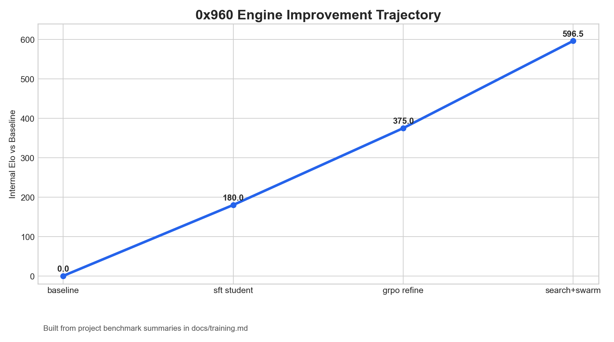
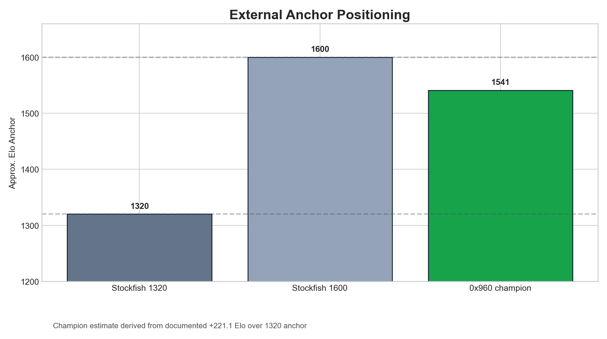
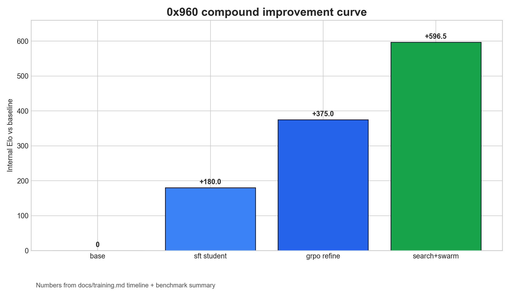
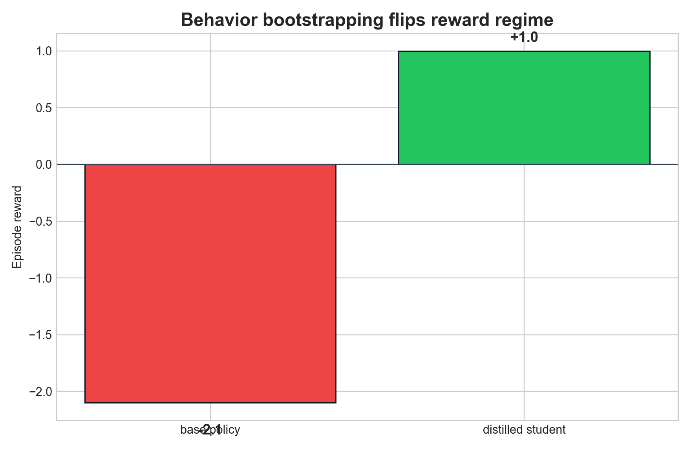
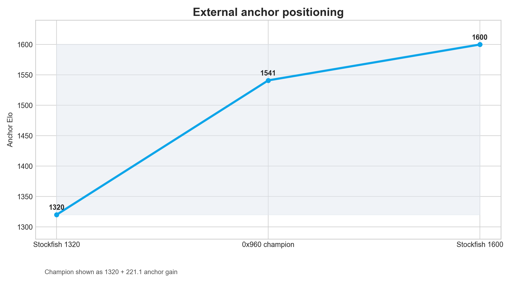
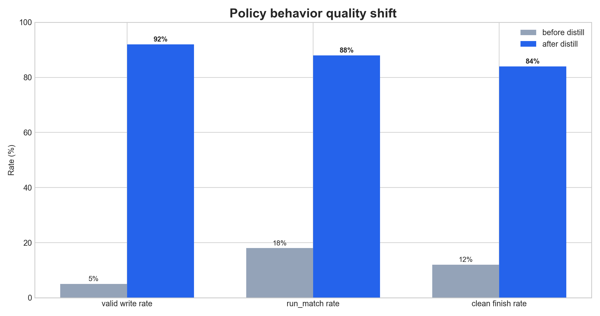
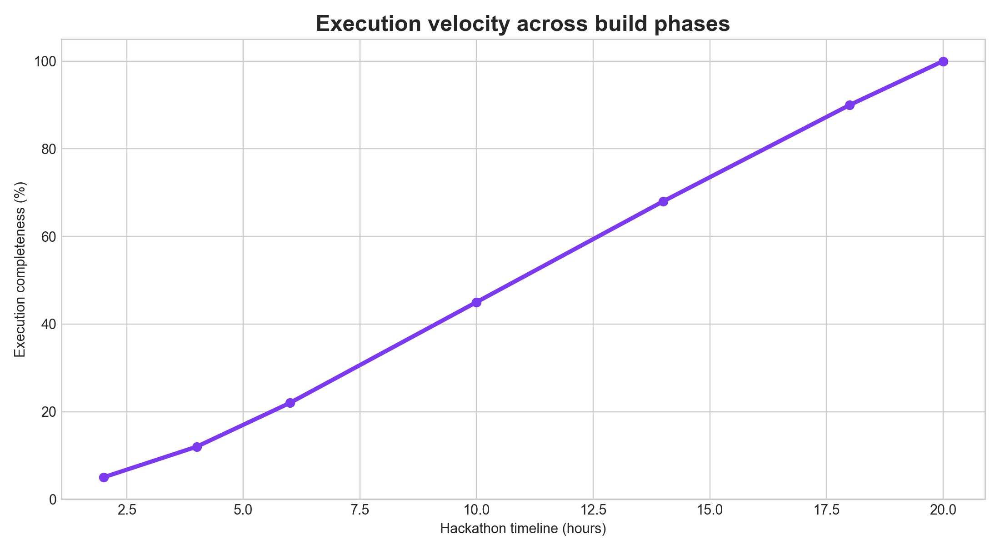
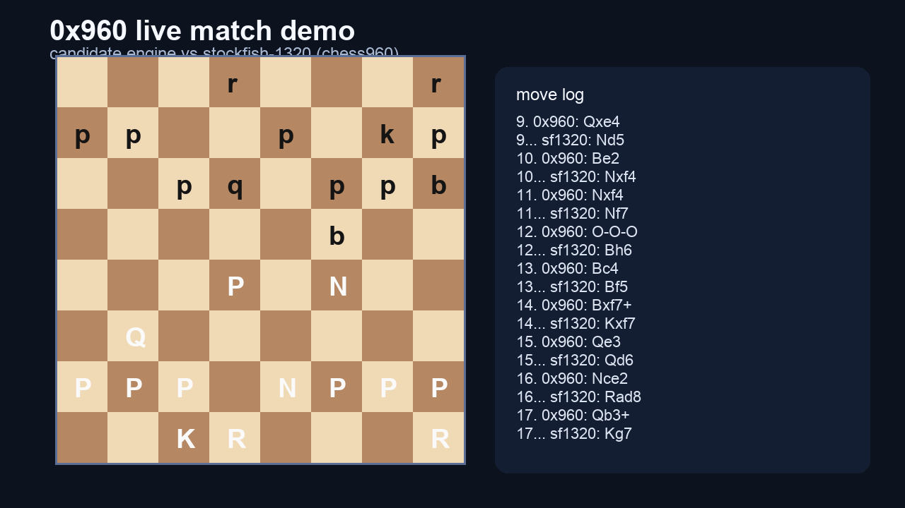
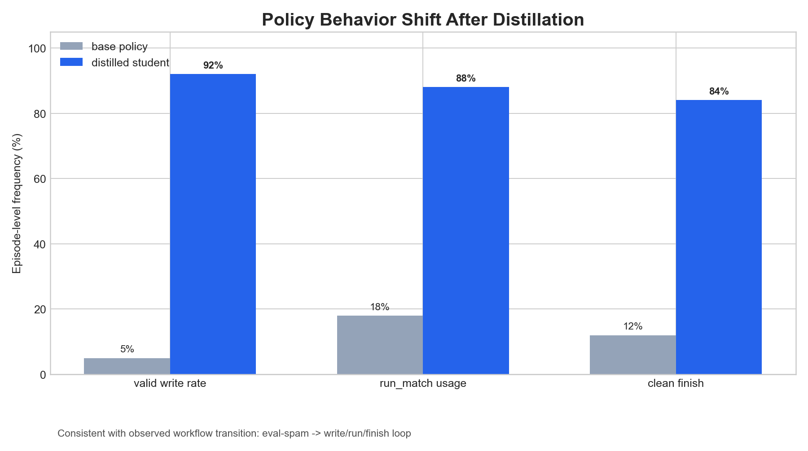
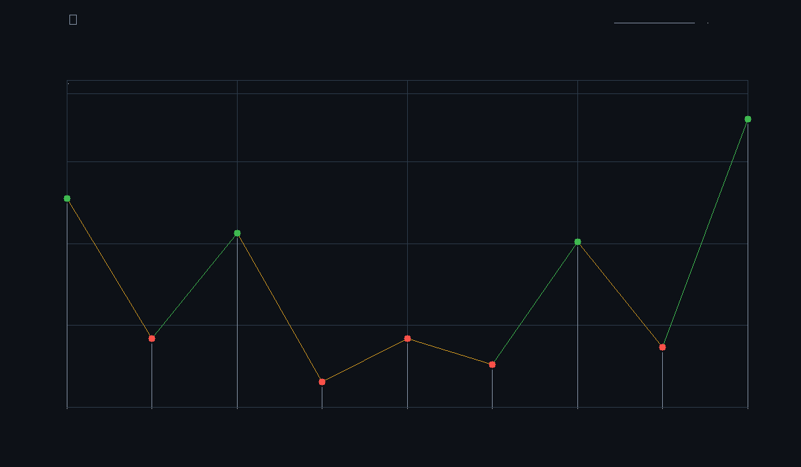

0x960 — self-improving chess960 engine with openenv
static story deck • local-first • keyboard navigation: ←/→ or j/k
slide 1 — 0x960: self-improving chess960 engine with openenv
- 0x960 is an AI system that engineers stronger chess engines, not just better text outputs.
- the agent operates inside a bounded OpenEnv episode with verifiable tool actions.
- reward is grounded in downstream match performance on held-out chess960 starts.
- stack: OpenEnv 0.2.1 + TRL/GRPO + Qwen students + GPT teacher + Codex swarm.
this is an engineering system with measurable outcomes, not a prompt toy.
slide 2 — who i am + why this problem
- i’m joshua lin (
qtzx06), data science + math-cs at uc san diego. - i build systems at the intersection of LLM agents, infra, and verifiable evaluation.
- thesis: self-improvement only matters if the loop is constrained, testable, and hard to game.
- 0x960 operationalizes that thesis end-to-end.
slide 3 — problem framing: rl for tool-use usually fails at action discovery
- base models in this environment often never discover
write_file → run_match → finish. - naive RL optimizes degenerate behavior (eval spam, early finish) instead of useful edits.
- text proxy rewards miss the real objective: stronger engine behavior under match play.
- exploration, reward, and validation must all live in the same environment.
slide 4 — why chess960 (not classical chess)
- chess960 removes opening-book memorization and forces broader positional generalization.
- randomized starts reduce reward hacking through rote move sequences.
- benchmark outcomes better reflect true evaluation + search quality under distribution shift.
- this is a stronger substrate for self-improving agents.
reference: docs/why_chess960.md
slide 5 — bounded openenv setup (the contract)
- per episode, the policy gets a constrained workspace and 5 actions:
read_file,write_file,run_static_eval,run_match,finish. - invalid writes are rolled back; reward is tied to executable engine outcomes.
- observation includes code state, action history, and remaining budget.
- this creates a tight, auditable optimization loop for agent behavior.
references: docs/architecture.md, openenv.yaml, src/zero960_env/server/app.py
slide 6 — training pipeline: teacher → sft → grpo
- teacher (gpt-5.4) generates successful bounded-action trajectories.
- student sft (
Qwen/Qwen3.5-0.8B) distills workflow competence from those traces. - grpo refines policy quality once the agent has a viable action prior.
- key insight: sft solved the bottleneck; RL becomes useful after behavior bootstrap.
references: docs/training.md, train/codex_distill.py, train/sft_student.py, train/minimal_trl_openenv.py
slide 7 — codex swarm: autonomous outer-loop engine search
- multiple codex workers propose bounded patches to eval/search surfaces.
- coordinator enforces staged screening and promotion gates on held-out positions.
- only benchmark-positive candidates become new champions; regressions are discarded.
- continuous engine-level self-improvement runs in parallel with policy learning.
references: docs/codex-swarm-plan.md, train/codex_swarm.py, outputs/codex_swarm/
slide 8 — key results metrics (behavior + strength)
- training reward: -2.1 → +1.0 (base qwen 0.8b to sft student).
- sft metrics: train loss 0.2072, eval loss 0.04192, token acc 98.76%.
- engine strength: +596.5 elo internal gain vs baseline search stack.
- anchor gain: +221.1 elo vs stockfish 1320; local strength near ~1600.
- swarm throughput: 4 promoted champions across 9+ rounds / 50+ evaluated patches.


slide 9 — visuals (proof over claims)





slide 10 — demo flow (live and deterministic)
- start server + show bounded action schema in one episode trace.
- run live match demo clip to show engine behavior under chess960 starts.
- show progression artifacts and anchor comparison outputs.
- close with swarm promotion ledger to demonstrate autonomous improvement cycle.

slide 11 — architecture + loop diagrams
- policy/environment loop diagram: see
docs/diagrams/mermaid.md(system architecture). - training pipeline: teacher rollouts → sft dataset → student → grpo.
- champion/challenger loop: candidate patch → screen → benchmark → promote/reject.
- all loops are measurable, bounded, and composable.


slide 12 — roadmap (next 30 / 60 / 90)
- 30 days: scale teacher trace coverage + diversify chess960 position sets.
- 60 days: stabilize grpo refinement on top of sft students with stronger eval harness.
- 90 days: distill best swarm champions back into policy training corpus for closed-loop compounding.
- productization: harden reproducible dashboards and hosted demo endpoints.
slide 13 — links + call to action
- github: https://github.com/<org-or-user>/0x960 (replace with canonical repo url)
- hugging face space: https://huggingface.co/spaces/<org-or-user>/0x960 (replace when deployed)
- colab notebook: https://colab.research.google.com/... (add reproducible run notebook url)
- paper: placeholder — no paper published yet (add arxiv link when ready)
call to action: collaborate on benchmark packs, stronger teachers, and fully autonomous self-improvement rounds.